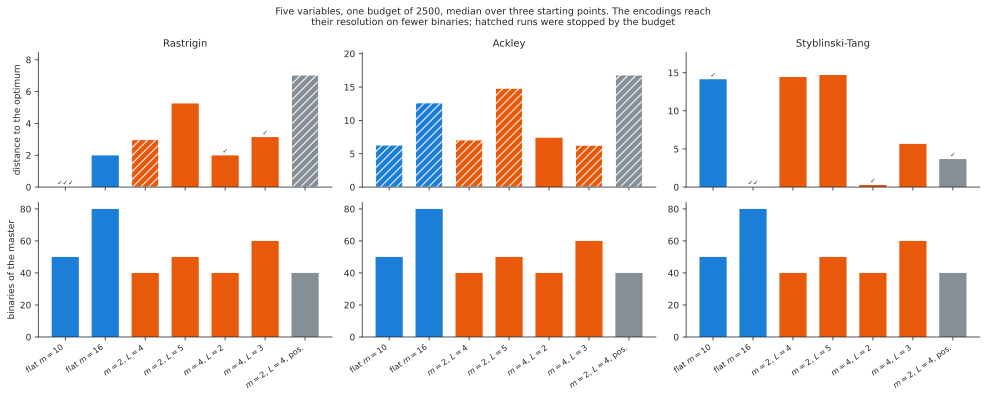
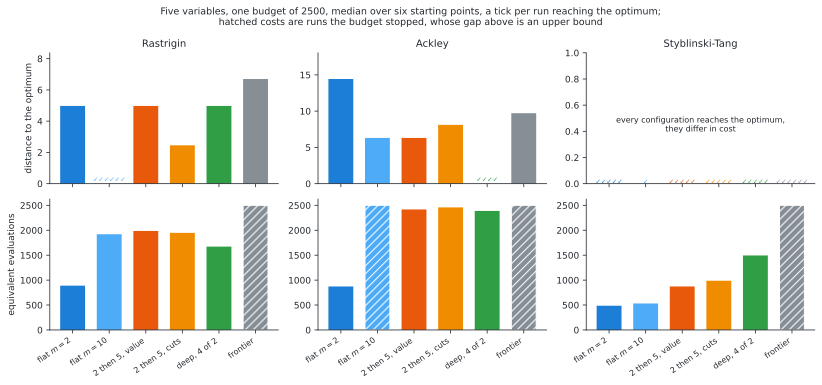
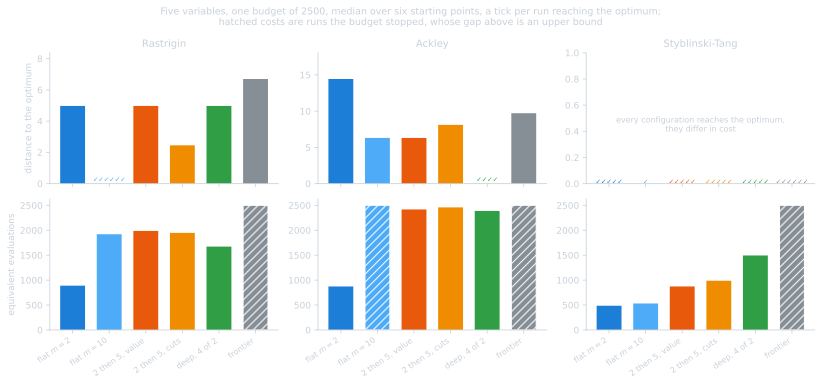

Annex D: the extensions, measured#
This annex gives the detailed results of the four extensions of the method and the repeated runs at larger budgets on which their ranking relies. The main findings are summarized in the results.
Unless stated otherwise, the experiments use five variables, \(2500\) equivalent evaluations and three starting points. The constructions are described in the methodology and the tuning of their parameters in annex C.
Subdivision of a subset of the variables#
Subdividing a subset of the variables improves the results when the multimodality is concentrated in these variables and degrades them otherwise, since a variable that is not subdivided keeps all its basins within every box. On Styblinski-Tang, which is multimodal in every variable, leaving three of the five variables undivided reduces the number of starting points reaching the optimum from two of three to none.
subdivision of |
boxes |
binaries |
distance |
cost |
reached |
|---|---|---|---|---|---|
all 5 variables, \(m=2\) |
32 |
10 |
\(1.99\) |
540 |
0/3 |
3 variables, \(m=4\) |
64 |
12 |
\(0.00\) |
773 |
3/3 |
2 variables, \(m=10\) |
100 |
20 |
\(0.00\) |
858 |
3/3 |
2 variables, \(m=5\) |
25 |
10 |
\(1.99\) |
620 |
0/3 |
1 variable, \(m=10\) |
10 |
10 |
\(3.98\) |
419 |
0/3 |
Table D.1. Subdivision of a subset of the variables of partly_multimodal.
The least expensive successful configuration does not exactly match the
multimodality. partly_multimodal is the Rastrigin function in two variables
and a paraboloid in three, yet dividing three variables into four is less
expensive than dividing two into ten, \(773\) evaluations against \(858\), with
twelve binaries against twenty; the additional variable costs nothing to
subdivide since the objective is unimodal in it within every box. The cost is
governed by the number of binaries.
Multi-resolution encoding#
The multi-resolution encoding, with one categorical variable per level and the box index given by its base-\(m\) digits, reduces the number of binaries required for a given resolution. Table D.2 gives the median distance to the optimum in five variables from three starting points with a budget of \(2500\).
encoding |
binaries |
resolution |
Rastrigin |
Ackley |
Styblinski-Tang |
|---|---|---|---|---|---|
flat, \(m=10\) |
50 |
10 |
\(0.00\) · 3/3 |
\(6.30\)† |
\(14.14\) · 1/3 |
flat, \(m=16\) |
80 |
16 |
\(1.99\) |
\(12.63\)† |
\(0.00\) · 2/3 |
levels \(m=2\), \(L=4\) |
40 |
16 |
\(2.99\)† |
\(7.08\)† |
\(14.44\) |
levels \(m=2\), \(L=5\) |
50 |
32 |
\(5.25\) |
\(14.82\)† |
\(14.70\) |
levels \(m=4\), \(L=2\) |
40 |
16 |
\(1.99\) · 1/3 |
\(7.40\) |
\(0.27\) · 1/3 |
levels \(m=4\), \(L=3\) |
60 |
64 |
\(3.14\) · 1/3 |
\(6.28\)† |
\(5.67\) |
levels \(m=2\), \(L=4\), positional |
40 |
16 |
\(7.04\)† |
\(16.81\)† |
\(3.68\) · 1/3 |
Table D.2. Flat and multi-resolution encodings, \(n = 5\). † stopped by the budget.


Figure D.1. Number of binaries and results of the multi-resolution encoding.
Two levels of four subdivisions reach a resolution of sixteen with forty binaries instead of the eighty of the flat encoding, without degrading the results at this resolution: \(1.99\) against \(1.99\) on Rastrigin, with one starting point reaching the optimum against none for the flat encoding with \(m=16\), and \(0.27\) against \(0.00\) on Styblinski-Tang with fewer evaluations, \(920\) against \(973\). The saving increases with the resolution: sixty binaries give sixty-four subdivisions per component, which would require \(320\) binaries with the flat encoding.
The encoding is most useful on Styblinski-Tang, where the density study fails: ten subdivisions per variable, the best density for the other problems, give \(14.14\) and reach the optimum from one starting point of three. Sixteen subdivisions correct this, and two levels of four reach a distance of \(0.27\) with half the binaries of the equivalent flat encoding. The encoding is thus suited to problems whose useful density exceeds what the binaries allow.
It does not improve the results on problems whose difficulty lies elsewhere. On Rastrigin no configuration performs better than the flat encoding with \(m=10\), which does not require a higher resolution, and on Ackley all configurations are stopped by the budget without reaching the optimum, the difficulty being a basin too broad for any resolution.
At the same resolution of sixteen and the same forty binaries, two levels of four perform better than four levels of two on Rastrigin and Styblinski-Tang, \(1.99\) against \(2.99\) and \(0.27\) against \(14.44\), and comparably on Ackley, \(7.40\) against \(7.08\). The cut model is linear in the one-hot variables and can represent the contribution of each level but not the dependence of the effect of a fine digit on the coarse digit; each additional level adds a dimension over which this assumption is incorrect. The five-level configuration gives the worst results of the unweighted configurations on two of the three problems.
The positional weighting gives the worst results on Rastrigin and Ackley by a large margin, which confirms, in an independent setting, the conclusion obtained for the trust-region metric: weighting an interval by its index expresses a proximity that the problem does not have.
Hierarchies#
Three shapes of hierarchy were implemented. The deep hierarchy reaches the optimum of Ackley from four starting points of six, which no other configuration does; none of the shapes performs better than the flat subdivision on the other problems.
method |
Rastrigin |
Ackley |
Styblinski-Tang |
|---|---|---|---|
flat \(m=2\) |
\(4.98\) |
\(14.43\) |
\(0.00\), 5/6, 486 |
flat \(m=10\) |
\(0.00\), 6/6, 1920 |
\(6.30\), 2500† |
\(0.00\), 1/6, 532 |
two levels, by value |
\(4.98\) |
\(6.30\) |
\(0.00\), 5/6, 872 |
two levels, by cuts |
\(2.45\) |
\(8.11\) |
\(0.00\), 5/6, 987 |
deep, 4 levels of 2 |
\(4.98\) |
\(0.00\), 4/6, 2387 |
\(0.00\), 5/6, 1494 |
frontier, best first |
\(6.70\), 2500† |
\(9.71\), 2500† |
\(0.00\), 6/6, 2500† |
Table D.3. Hierarchies and flat subdivisions, \(n = 5\), six starting points. † stopped by the budget; the frontier expands boxes until the budget is spent.


Figure D.2. Hierarchies and flat subdivisions.
The deep hierarchy reaches the optimum of Ackley in five variables from four starting points of six and terminates on its own criterion after \(2387\) evaluations. The flat subdivision at ten intervals gives \(6.30\), but four of its six runs were stopped by the budget, so that Table D.3 underestimates it: with twice the budget it reaches the optimum from two starting points of six, and no more with a larger budget. The difference is therefore four against two, as measured below.
On Styblinski-Tang all configurations reach the optimum, so that only the cost differs; the coarse flat subdivision is the least expensive, \(486\) evaluations against \(872\) to \(2500\) for the hierarchies. The frontier is the only shape that reaches the optimum from all six starting points, at five times the cost of the least expensive configuration reaching it from five.
The frontier, the only shape able to revise a choice, gives the worst result on Rastrigin, \(6.70\) against \(4.98\) for the coarse flat subdivision. This is not due to backtracking but to its cost: each node restarts a master and discards its cuts, so that the budget that provides fifty cuts to a single model provides five cuts to each of ten models, none of which is sufficiently determined to rank its children. The flat method instead keeps a single model over the whole subdivision and localizes the search with its trust region, which can also be enlarged again.
The hierarchies are therefore not a default; they address a specific type of problem, a basin too broad for any affordable density, the flat subdivision being preferable in the other cases.
Effect of the budget#
Several comparisons above involve runs stopped by the budget, which raises the question of whether the rankings are properties of the method or of the budget of \(2500\). This was measured on the most sensitive comparison, Ackley in five variables, from six starting points (Table D.4).
budget |
flat \(m=10\) |
deep, 4 levels of 2 |
|---|---|---|
\(2500\) |
\(6.30\) · 2500 · 0/6 · 4 of 6 stopped by the budget |
\(0.00\) · 2387 · 4/6 · none stopped by the budget |
\(5000\) |
\(5.62\) · 3306 · 2/6 · none stopped by the budget |
\(0.00\) · 3093 · 4/6 · none stopped by the budget |
\(10\,000\) |
\(5.62\) · 3306 · 2/6 · none stopped by the budget |
\(0.00\) · 3093 · 4/6 · none stopped by the budget |
Table D.4. Effect of the budget on Ackley, \(n = 5\).
The budget concealed part of the result of the flat method: with a budget of \(2500\) it reaches the optimum from no starting point, and with twice this budget from two of six. The earlier statement that only the hierarchy solves Ackley compared a truncated run with a terminated one; the correct comparison is four starting points of six against two.
Beyond this, a larger budget has no effect: the results at \(5000\) and \(10\,000\) are identical, both configurations terminating after \(3306\) and \(3093\) evaluations respectively, on their own limits, the trust region shrinking to infeasibility or the stall counter, described in annex C. On this problem the budget is not the binding limit; the stopping rule is.
In general, when a cost is below the budget, the budget was not binding and the comparison holds as measured; this applies to most of this annex, including all Rastrigin results: the flat subdivision with \(m=10\) reaches the optimum from all six starting points for \(1920\) evaluations with budgets of \(2500\), \(5000\) and \(10\,000\). When a cost equals the budget, the value is an upper bound and the ranking holds only within that budget until the runs are repeated, as for Ackley here.
Estimation of the density#
The density of the subdivision is the only setting without a default value, and
its estimation is one of the directions identified in
the conclusion. benchmarks/basin_spacing.py
estimates it from the landscape rather than from the dimension.
The estimated quantity is not a wavelength, since the restriction of \(f\) to a line along \(e_j\) has a spectrum that depends on the position of the line. The expected number of minima along such a line is well defined for any \(C^1\) objective,
and is the number of basins the subdivision must separate, so that \(m_j = N_j\).
This assumes that the multimodality lies in the objective. When the basins are
due to non-convex constraints, such as a disconnected feasible set or a minimum
located where the active set changes, a scan of \(f\) alone does not detect them.
For an objective that is monotone along every line, such as a mass, and a
constraint whose feasible set consists of six intervals along each axis, the
estimator returns \(m = 1\) per component and reports a converged ladder, since the
objective has a single basin. The one-sided guarantee holds, but for the wrong
function. estimate_basins should therefore not be applied to stress-constrained
sizing or topology problems; a constraint-aware count is described below.
The expectation is estimated by Monte Carlo integration over axial line scans: an anchor is drawn at random, the component is swept over its bounds, and the sufficiently deep minima are counted. A space-filling design is not suitable: averaging over the other components estimates the main effect \(\mathbb{E}[f \mid x_j]\), and the multimodality of Griewank (a product over all components) and Ackley (inside a norm) does not survive this average.
Table D.5 gives the estimates in five variables with five anchors per component, the ladder of scan rates stopping when the count no longer increases.
problem |
proposed \(m\) |
binaries |
scan cost |
converged |
|---|---|---|---|---|
Rastrigin |
10 10 10 10 10 |
50 |
12 525 |
yes |
Ackley |
62 62 62 63 63 |
312 |
25 350 |
no |
Styblinski-Tang |
2 2 2 2 2 |
10 |
1250 |
yes |
Griewank |
19 13 11 5 8 |
56 |
12 525 |
yes |
|
10 10 1 1 1 |
23 |
6100 |
yes |
Table D.5. Estimated densities, \(n = 5\).
Note
The comparisons below were measured before the correction of the prominence of a minimum, so that their Griewank rows use the density 19 13 11 7 9 proposed at the time and their Ackley rows 63 instead of 62. No other value changed.
All converged estimates agree with counts that can be verified analytically: the
minima of Rastrigin are one unit apart over a range of ten, Styblinski-Tang is a
quartic double well, and the \(j\)-th component of Griewank has period
\(2\pi\sqrt{j}\), the estimate decreasing with \(j\) accordingly. For
partly_multimodal, the amplitude gate assigns a single interval to the three
paraboloid components, which yields the partial subdivision of the first section
from the landscape.
Value of the proposed density#
Each problem is given four times the budget implied by its estimate, so that all runs terminate on their own criterion; three starting points (Table D.6).
problem |
density |
binaries |
predicted |
distance |
cost |
reached |
|---|---|---|---|---|---|---|
Rastrigin |
proposed, 10 ×5 |
50 |
2000 |
\(0.00\) |
2103 |
3/3 |
Rastrigin |
2 ×5 |
10 |
400 |
\(4.97\) |
823 |
0/3 |
Ackley |
proposed, 63 ×5 |
314 |
12 560 |
\(12.75\) |
5372 |
0/3 |
Ackley |
2 ×5 |
10 |
400 |
\(14.43\) |
892 |
0/3 |
Ackley |
10 ×5 |
50 |
2000 |
\(6.30\) |
3385 |
1/3 |
Styblinski-Tang |
proposed, 2 ×5 |
10 |
400 |
\(0.00\) |
458 |
2/3 |
Styblinski-Tang |
10 ×5 |
50 |
2000 |
\(14.14\) |
598 |
1/3 |
Griewank |
proposed, 19 13 11 7 9 |
59 |
2360 |
\(0.064\) |
3463 |
1/3 |
Griewank |
2 ×5 |
10 |
400 |
\(0.061\) |
1016 |
0/3 |
Griewank |
10 ×5 |
50 |
2000 |
\(0.027\) |
3166 |
0/3 |
|
proposed, 10 10 1 1 1 |
23 |
920 |
\(0.00\) |
858 |
3/3 |
|
2 ×5 |
10 |
400 |
\(1.99\) |
540 |
0/3 |
|
10 ×5 |
50 |
2000 |
\(0.00\) |
1554 |
3/3 |
Table D.6. Proposed and fixed densities, \(n = 5\).
On all problems whose ladder converged, the proposed density coincides with the
better of the two fixed densities, and on partly_multimodal it improves on
both: the optimum is reached from all starting points for \(858\) evaluations
against \(1554\) with ten subdivisions everywhere, the three unimodal components
being left undivided. The proposal selects ten subdivisions for Rastrigin and two
for Styblinski-Tang, which no single fixed density achieves.
The budget implied by the estimate is also consistent with the measured cost:
\(2000\) predicted against \(2103\) measured on Rastrigin, \(400\) against \(458\) on
Styblinski-Tang, \(920\) against \(858\) on partly_multimodal and \(2360\) against
\(3463\) on Griewank. The rule of \(\sum_j m_j\) sub-problems agrees within about a
third on the first three problems, in accordance with the ratio of coefficients
to cuts discussed in the methodology.
The estimate fails on the problem for which it reports non-convergence. On
Ackley the ladder does not converge, and the proposed density of sixty-three
gives worse results than ten, \(12.75\) against \(6.30\). Its ripples are one unit
apart over a range of sixty-four, so that a density separating them is correct as
a count but not useful as a subdivision: on Ackley the global funnel, not the
ripples, must be resolved, which is the case addressed by
the hierarchies. The estimate reports this in advance, with
converged false, which distinguishes the three proposals to retain from the one
to discard.
Ackley also confirms that the budget is not the binding limit: with \(50\,240\) evaluations allowed, the run terminates after \(5372\) on its trust region or stall counter, as in the budget study.
Constraint-aware count#
When a constraint is given, the count concerns the basins of the problem rather
than those of the objective: the minima of \(f\) restricted to the feasible set.
Along a line this set is a union of intervals, so that the count decomposes, as
implemented in count_minima_over_feasible: the minima retained by the
prominence gate within each maximal feasible interval and, for an interval
without such a minimum, the interval itself, whose minimum lies on a boundary.
A minimum located at the end of an interval is located where the active set changes, and is a basin that the subdivision must separate in the same way as an interior minimum. A single rule thus covers both ways in which a constraint makes a problem multimodal: a disconnected feasible set, and an optimum on a constraint active on one side only.
Table D.7 gives the result for an objective that is monotone along every line, a mass, under a constraint feasible where \(\cos(\pi x_j) \le 1/2\), i.e. six intervals per axis over a range of ten.
proposed \(m\) |
ladder |
|
|---|---|---|
objective only |
\((1, 1, 1)\) |
converged |
with the constraint |
\((6, 6, 6)\) |
converged |
Table D.7. Objective-only and constraint-aware counts.
Two details determine the validity of the count.
The gate is evaluated with respect to the whole line, not to the interval. A
narrow feasible interval at the bottom of a bowl contains ripples that are large
relative to the interval and negligible relative to the problem; measured against
the interval they would give ten basins, against the range of the whole scan one.
The range is therefore passed to count_minima instead of being recomputed for
each interval.
An infeasible line does not count as one basin. A randomly drawn anchor can place
a whole line outside the feasible set, in which case it carries no information.
Such anchors are drawn again, up to FEASIBLE_ANCHOR_ATTEMPTS per line, and a
component that never meets the feasible set raises NoFeasibleScanError instead
of returning a count. This case occurred in practice: the first run of the
experiment above reported no feasible segment, the off-axis anchor lying outside
the feasible set.
Limitations#
Three limitations remain for stress-constrained sizing and topology problems.
Parameterization. Subdividing a field of \(10^4\) to \(10^6\) element densities is outside the scope of this method, and the scan costs \(n_\text{lines} \times n_\text{points} \times n\) evaluations, each requiring a solution of the model. The approach applies to a reduced space, such as component positions, sizing, material or layout choices, not to a density field.
Oblique boundaries. A stress-feasible region is rarely bounded by planes normal to the design variables. An axial scan across an oblique boundary detects many short intervals and overcounts, or passes through a gap and undercounts. This limitation is more severe than for an objective, since feasibility along a line depends much more strongly on the anchor than a value does.
Singular optima. In stress-constrained topology optimization the optimum can lie in a degenerate subset of the feasible set, reachable only with \(\varepsilon\)- or \(qp\)-relaxation (Cheng and Guo, 1997; Duysinx and Bendsøe, 1998). These subsets have zero volume, so that no sampling of feasibility reaches them, whatever the number of points.
Irregular scans#
The error of the estimator is one-sided, since a scan reveals the basins it resolves and no others, so that the only available stopping rule is to refine until the count no longer increases. This rule is invalid for an evenly spaced scan, because a uniform grid whose spacing resonates with the landscape produces aliasing without any indication. Table D.8 gives the ladder for Ackley.
scan |
rung 1 |
2 |
3 |
4 |
5 |
6 |
stopped at |
|---|---|---|---|---|---|---|---|
uniform |
1 |
1 |
— |
— |
— |
— |
1 |
jittered |
4 |
9 |
20 |
36 |
55 |
62 |
not stopped |
Table D.8. Uniform and jittered scans on Ackley.
The uniform scan gives the same count twice and stops at a value wrong by a factor of sixty. Random abscissae remove the resonance, and the ladder then increases without converging, which is the correct result. The jitter is thus required for the stopping rule to be valid.
python -m benchmarks.basin_spacing
Trust-region floor and stall counter#
The tables above use the default settings of the master, so that only the density varies. One further setting has a comparable effect.
The master multiplies its step by \(0.7\) every step_decreasing_activation
stalling iterations, down to min_step, and increases it only after an
improvement. The default floor is one, so that six stalling iterations fix the
trust region at a radius of one. This also makes the parallel probes redundant,
since their radii are geomspace(max(step / 2, min_step), step): four points at
a step of two probe \(1\), \(1.26\), \(1.59\) and \(2\), and once the step reaches one
all four solve the same problem. The exploration then stops.
The stall counter alone does not explain this. Increased from ten to the number of binaries while the trust region still shrinks, it leaves Ackley at ten subdivisions unchanged, \(6.3021\) for \(3385\) evaluations with both values. At sixty-three subdivisions it changes the distance from \(14.31\) to \(14.01\) for eighteen times the wall-clock time.
Keeping the floor at the tuned radius improves the results, provided the stall
counter is increased accordingly. A larger trust region stalls more often than a
shrinking one, so that the floor alone stops a run earlier: Rastrigin, solved from
all starting points for \(2103\) evaluations, then gives \(0.99\) and one of three.
Table D.9 gives the results with min_step \(= 2\) and upper_bound_stall
\(= \sum_j m_j\), in five variables from three starting points, each problem at its
proposed density and Ackley at ten.
problem |
settings |
distance |
cost |
reached |
|---|---|---|---|---|
Rastrigin |
default |
\(0.0000\) |
2103 |
3/3 |
Rastrigin |
both |
\(0.0000\) |
5673 |
3/3 |
Ackley, \(m=10\) |
default |
\(6.3021\) |
3385 |
1/3 |
Ackley, \(m=10\) |
both |
\(4.9449\) |
4570 |
1/3 |
Styblinski-Tang |
default |
\(0.0000\) |
458 |
2/3 |
Styblinski-Tang |
both |
\(0.0000\) |
473 |
3/3 |
Griewank |
default |
\(0.0644\) |
3463 |
1/3 |
Griewank |
both |
\(0.0348\) |
9440 (budget reached) |
1/3 |
|
default |
\(0.0000\) |
858 |
3/3 |
|
both |
\(0.0000\) |
730 |
3/3 |
Table D.9. Default settings and modified trust-region floor and stall counter.
The distance of \(4.95\) on Ackley is the best result of a flat subdivision in this
study, against \(6.30\) in the density study,
and is due to a setting rather than a mechanism. The results improve on three of
the five problems and do not degrade on the others. The cost changes unevenly:
partly_multimodal becomes less expensive, Styblinski-Tang is unchanged, Ackley
is \(1.35\) times and Rastrigin \(2.7\) times more expensive. The Griewank run spent
its whole budget, so that its \(0.0348\) is an upper bound.
This is a trade-off rather than a default, and the other tables keep the default values. It shows that the runs of this study terminate on a closed trust region rather than on the patience of the master, and that both settings must be changed together, since keeping the trust region open increases the number of stalls.
run_at_density(problem, 5, density, seed, budget,
stall=stall_counter(density), min_step=MIN_STEP)
Convexity margin on Ackley and Griewank#
All tables above use the value of min_dfk calibrated in configurations.py,
\(100\). This value is absolute, in the units of the objective, and the ranges of
the five problems differ widely (Table D.10).
problem |
range |
\(100\) as a fraction of the range |
optimum reached |
|---|---|---|---|
Styblinski-Tang |
\(549.7\) |
18% |
yes |
Rastrigin |
\(186.7\) |
54% |
yes |
|
\(164.1\) |
61% |
yes |
Ackley |
\(14.5\) |
690% |
no |
Griewank |
\(4.9\) |
2045% |
no |
Table D.10. Calibrated margin relative to the range of each problem.
The two problems for which the margin exceeds the range are the two whose optimum
is never reached. The repair computes rhs = l_df_k - df_k + min_dfk, the
overestimation of a cut plus the margin, and clips it at zero. When the margin is
several times the range, l_df_k - df_k has no effect: the clipping never
occurs, the least-squares problem is driven by a constant instead of the
measurements, and all slopes are shifted in the same direction. The cut model
then ranks the boxes according to the margin rather than the landscape.
Table D.11 gives the results on Ackley with \(m = 10\) for several margins, from three starting points, all other settings unchanged.
|
fraction of the range |
distance |
cost |
reached |
|---|---|---|---|---|
\(100\) |
690% |
\(6.3021\) |
3385 |
1/3 |
\(30\) |
207% |
\(4.9449\) |
2721 |
1/3 |
\(10\) |
69% |
\(0.0000\) |
2450 |
2/3 |
\(3\) |
21% |
\(12.8332\) |
1287 |
0/3 |
\(1\) |
7% |
\(8.9861\) |
927 |
0/3 |
Table D.11. Effect of the convexity margin on Ackley, \(m = 10\), \(n = 5\).
The margin has a useful range rather than a monotone effect.
Estimated density with swept convexity#
The sweep removes this dependence on the margin. Table D.12 compares runs at the estimated densities without any supplied value, neither margin nor density, with runs at the same densities and the calibrated margin.
problem |
density |
swept |
calibrated |
|---|---|---|---|
Styblinski-Tang |
2⁵ |
\(0.0000\) · 601 · 3/3 |
\(0.0000\) · 458 · 2/3 |
|
10 10 1 1 1 |
\(0.0000\) · 729 · 3/3 |
\(0.0000\) · 858 · 3/3 |
Ackley |
10⁵ |
\(0.0000\) · 2622 · 2/3 |
\(6.3021\) · 3385 · 1/3 |
Griewank |
19 13 11 7 9 |
\(0.0074\) · 3083 · 2/3 |
\(0.064\) · 3463 · 1/3 |
Ackley |
63⁵ (estimated) |
\(7.6161\) · 3459 · 0/3 |
\(14.31\) · 2094 · 0/3 |
Rastrigin |
10⁵ |
\(0.9950\) · 1547 · 0/3 |
\(0.0000\) · 2103 · 3/3 |
Table D.12. Swept and calibrated convexity at the estimated densities, \(n = 5\).
The sweep reaches the optimum of the two problems on which the calibrated margin fails: Ackley with ten subdivisions from two starting points of three, the best result of a flat subdivision in this annex, and Griewank from two instead of one. Neither run required a convexity value or a density, the latter being given by the scans.
The sweep fails on Rastrigin, which the calibrated margin solves from all starting
points. This qualifies the statement that the swept configuration performs as
well as the calibrated one on all problems, which was measured at the default
density of baselines.py rather than at ten subdivisions in five variables. The
calibrated margin is 54% of the range of Rastrigin, within the useful range of
Table D.11, and was calibrated on this problem. The swept run terminates after
\(1547\) evaluations at a distance of \(0.9950\), one basin away from the optimum;
the reason for this termination has not been investigated.
The sweep does not make the estimated density useful either: on Ackley with
sixty-three subdivisions the distance decreases from \(14.31\) to \(7.62\), but the
optimum is not reached. The non-convergence reported by estimate_basins for this
case is therefore justified independently of the convexity: sixty-three intervals
separate the ripples, whereas the funnel must be resolved.
Warning
This changes the interpretation of the previous section, not its measurements. These runs used a margin of 690% of the range of Ackley, for which the cut model provides no ranking, and keeping the trust region open was beneficial because it was then the only mechanism guiding the search. The conclusion that the runs terminate on a closed trust region holds only under such a margin. The effect of keeping the trust region open with the sweep has not been measured.
Prominence gate#
count_minima initially measured a minimum against the highest point on each
side. Within a bowl this is the far wall, so that every ripple appeared as deep as
the bowl and the gate was never effective: ripples of one hundredth of the range
on a parabola were retained with a threshold of one half. It now measures the
topographic prominence, moving outwards to the first point below the minimum and
taking the highest point crossed, i.e. the saddle that closes the basin. A side
that reaches the bound without decreasing further is open, and the depth is given
by the closed side, which keeps the minimum located a tenth of a unit inside the
lower bound of Rastrigin in the count.
The correction hardly changes the estimates (Ackley from \(63\) to \(62\), Griewank from \(19\,13\,11\,7\,9\) to \(19\,13\,11\,5\,8\), the others unchanged). The ripples of Ackley are not shallow in terms of prominence: each has the depth of its adjacent ridge, \(\exp(S/5)\cdot 0.403\), with \(S\) the sum of the four perpendicular cosines, i.e. 1% to 5% of the range of the scan. Table D.13 shows that no threshold separates them from the relevant basins.
|
Rastrigin |
Ackley |
Styblinski-Tang |
Griewank |
|---|---|---|---|---|
0.02 |
10 ×5 |
62 62 62 63 63 |
2 ×5 |
19 13 11 5 8 |
0.10 |
10 ×5 |
60 62 62 62 62 |
2 ×5 |
5 2 9 4 1 |
0.20 |
10 ×5 |
44 61 60 60 60 |
1 1 1 1 2 |
1 1 2 1 1 |
0.30 |
10 ×5 |
1 56 56 53 55 |
1 ×5 |
1 2 1 1 1 |
Table D.13. Estimated densities against the prominence threshold.
A threshold large enough to affect Ackley already gives incorrect counts for Styblinski-Tang and Griewank, while Ackley remains above fifty. No amplitude threshold reduces sixty-two to ten, and this is not a defect of the gate: sixty-two is the actual number of basins along an axis of Ackley, whose ripples are one unit apart over a range of sixty-four. Ten does not correspond to a number of basins but to the box width at which the sub-problem descends the funnel by itself while still returning values that distinguish neighbouring boxes, a property of the local solver rather than of the objective.
The number of basins per axis is therefore the appropriate target only when the
basins are what the subdivision must separate. On a landscape whose fine
structure is handled by the local solver and whose coarse structure determines
the optimum, the count is correct but not useful, and the converged flag
identifies this case only indirectly.
Number of probes#
A swept run distributes its ladder over the parallel probes of the master, so that the number of probes is the number of rungs. Table D.14 gives the results on Ackley with the deep hierarchy and swept convexity, in five variables, from three starting points, with a budget of \(8000\).
depth |
probes |
distance |
cost |
reached |
|---|---|---|---|---|
4 |
2 |
\(9.7137\) |
489 |
0/3 |
4 |
3 |
\(9.7137\) |
1089 |
0/3 |
4 |
4 |
\(0.0001\) |
2263 |
2/3 |
4 |
6 |
\(9.7137\) |
1196 |
1/3 |
4 |
10 |
\(0.0001\) |
2802 |
3/3 |
6 |
4 |
\(0.0000\) |
3243 |
2/3 |
6 |
6 |
\(9.7137\) |
1348 |
1/3 |
6 |
10 |
\(0.0000\) |
3244 |
3/3 |
Table D.14. Effect of the number of probes on Ackley with the deep hierarchy, \(n = 5\).
Four rungs reach the optimum, six do not, and ten reach it from all starting points: the response is not monotone, and six probes give poor results between two values that perform well. The same number of probes degraded Rastrigin with the flat encoding, \(0.9950\) with six rungs against \(0.0000\) with ten, so that this behaviour is not specific to the hierarchy.
With ten rungs the swept hierarchy performs better than the calibrated one, three starting points of three against two, without any convexity value.
Warning
An earlier interpretation of these runs, retained in the history of this branch,
stated that the convexity policy is reversed between the encodings: a flat
subdivision would require the sweep and a hierarchy the absolute margin, the sweep
underestimating the scale within a shrinking box. This interpretation is
incorrect: all swept hierarchies were run with six probes and all calibrated ones
with four, the value set by ADAPTIVE, so that the number of probes was not kept
constant.
Two experiments based on that interpretation did not change any result, which contradicts it. Freezing the upper bound of the ladder at the scale observed at the first level, \(96\), close to the calibrated value of one hundred, left all distances unchanged. Raising the lower end of the ladder from two decades to a quarter of a decade below its top, so that all rungs lay between \(54\) and \(96\), also left all distances unchanged. A convexity varied over two orders of magnitude without affecting the result is not the decisive variable.
Evaluation counting in parallel runs#
All the above results were obtained with a single process, because of a
limitation of the benchmark rather than of the master. BudgetedCounter wraps the
objective and counts the calls in the process that created it. The master solves
the candidate boxes of an iteration on number_of_processes workers, and
CallableParallelExecution uses its default use_threading, so that the workers
are forked processes: each receives a copy of the counter, which is lost when the
process terminates. The count of the parent process then covers only the
evaluations it performed itself, an arbitrary fraction of the run.
The resulting values are incorrect and biased (Table D.15).
problem |
best value of the counter, 1 process |
best value of the counter, 4 processes |
best value of the database, 1 and 4 processes |
|---|---|---|---|
Rastrigin |
\(0.0000\) |
\(33.4089\) |
\(0.0000\) |
Ackley |
\(7.0756\) |
\(19.4200\) |
\(7.0756\) |
Styblinski-Tang |
\(-181.6941\) |
\(-181.6941\) |
\(-181.6941\) |
Griewank |
\(0.0271\) |
\(1.6134\) |
\(0.0271\) |
Table D.15. Best values recorded by the counter and by the database of the master.
All these runs reached the same optimum; only the measurement differs. On Styblinski-Tang, the least expensive problem, the counter gives the correct value with four processes, so that a check limited to this problem would not have revealed the issue.
Database of the master#
The database of the master does not have this limitation, since its entries are
written by the parent process from the results returned by the workers. The
Benders formulation registers iterations as an observable of the master
problem, and the adapter of the sub-scenario sets it to the length of the database
of the sub-problem, i.e. the number of distinct design points at which the box
was evaluated. There is one entry per box, transferred between processes by
construction.
The best value, the number of evaluations and the boxes are therefore read from
this database, and are identical with one and four processes on the four problems:
\(1337\), \(2552\), \(163\) and \(1661\) evaluations over \(64\), \(84\), \(8\) and \(64\) boxes.
RunOutcome contains these values.
Cost#
The cost reported in all tables of this study is a number of equivalent objective
evaluations under the adjoint convention, an objective call plus a gradient call,
which is the unit used by baselines.py. The database cannot provide this unit:
iterations counts points, whereas the cost counts calls; a point visited twice
is counted once and a gradient evaluation is not counted (Table D.16).
problem |
cost of the counter |
objective calls |
evaluations of the database |
ratio to the cost |
ratio to the calls |
|---|---|---|---|---|---|
Rastrigin |
2115 |
1361 |
1337 |
\(0.63\) |
\(0.98\) |
Ackley |
3685 |
2563 |
2552 |
\(0.69\) |
\(1.00\) |
Styblinski-Tang |
247 |
163 |
163 |
\(0.66\) |
\(1.00\) |
Griewank |
2595 |
1667 |
1661 |
\(0.64\) |
\(1.00\) |
Table D.16. Cost recorded by the counter and number of evaluations recorded by the database.
The number of evaluations of the database is close to the number of objective
calls without duplicates, within 2% in the worst case and exact on two problems.
The gradients are missing, and their share is not constant, the ratio to the cost
ranging from \(0.63\) to \(0.69\) over four problems with one seed each. No conversion
is therefore applied: both quantities are reported in their own units, and
RunOutcome.cost is documented as valid for a single process only.
For the same reason the budget is enforced in the parent process only. The
counter raises BudgetExceededError, and a forked process inherits the count at
the time of the fork and increments its own copy, so that the evaluations of the
workers do not reach the guard. A parallel run is therefore not budgeted, and
RunOutcome.truncated is False whatever its duration.
This is distinct from the upstream issue #7, in which the master lost the results of its workers and returned an incorrect converged optimum. That issue is fixed, and these measurements were made with the correction installed, which is why the optima agree between the numbers of processes.
Parallel speed-up#
With the outcome read from the database, the runs can be compared across numbers of processes: the work is identical, and only the wall-clock time can differ. Table D.17 gives the results for five problems, with the seeds and budgets of the tables above, as the best of two runs on an otherwise idle four-core machine.
problem |
evaluations |
boxes |
\(t(1)\) |
\(t(2)\) |
\(t(4)\) |
speed-up at 2 |
speed-up at 4 |
|---|---|---|---|---|---|---|---|
Rastrigin |
1337 |
64 |
\(12.75\) |
\(13.47\) |
\(13.34\) |
\(0.95\) |
\(0.96\) |
Ackley |
2552 |
84 |
\(16.91\) |
\(16.96\) |
\(17.30\) |
\(1.00\) |
\(0.98\) |
Griewank |
1661 |
64 |
\(13.01\) |
\(14.02\) |
\(13.51\) |
\(0.93\) |
\(0.96\) |
Styblinski-Tang |
163 |
8 |
\(0.35\) |
\(0.48\) |
\(0.45\) |
\(0.74\) |
\(0.79\) |
|
516 |
24 |
\(1.46\) |
\(1.59\) |
\(1.63\) |
\(0.91\) |
\(0.89\) |
Table D.17. Wall-clock time in seconds with one, two and four processes.
The numbers of evaluations and boxes and the best values are identical for the three numbers of processes, and no run is faster in parallel: the speed-up ranges from \(0.74\) to \(1.00\).
The parallel section covers _execute_doe, the evaluation of the trust-region
probes of an iteration, which represents about one tenth of a run, 9.0% on
Rastrigin and 11.8% on Ackley. Amdahl’s law limits the speed-up to \(1.12\) with
four workers, and this section does not scale either: its batches contain
number_of_parallel_points designs, four by default, about \(74\,\)ms of work
against \(87\,\)ms for the fork.
The remaining nine tenths are spent in the mixed-integer problem of the master (Table D.18).
problem |
wall-clock time |
MILP |
branch and bound |
construction in Python |
|---|---|---|---|---|
Rastrigin |
\(12.97\) |
78.5% |
65.8% |
12.7% |
Ackley |
\(17.57\) |
72.6% |
58.2% |
14.4% |
Styblinski-Tang |
\(0.61\) |
32.2% |
22.5% |
9.7% |
Table D.18. Share of the mixed-integer problem in the wall-clock time.
For the analytic problems, number_of_processes should therefore be left at one,
and the cost should not be interpreted as a number of sub-problems: the master
dominates these runs. For expensive sub-problems, such as the cantilever of the
results, the parallel evaluation of the probes reduces the wall-clock time.
Warning
A parallel run is not budgeted: the guard is in the counter of the parent process, and a forked process inherits a copy of the count. Table D.19 shows the consequence on Ackley with twenty probes and a budget of \(8000\).
cost |
truncated |
evaluations |
boxes |
best value |
|
|---|---|---|---|---|---|
1 process |
8000 |
yes |
5520 |
184 |
\(4.944911\) |
4 processes |
54 |
no |
7356 |
260 |
\(0.000007\) |
Table D.19. A serial and a parallel run with the same nominal budget.
The serial run was stopped by its budget, whereas the parallel run was not, solved 76 more boxes and reached the optimum. This difference is due to the missing budget enforcement, not to the parallel execution.
Issues reported upstream#
The analysis of these results identified issues and improvements concerning
gemseo-bilevel-outer-approximation rather than this package. They were
reported upstream and fixed where possible; only their consequences for the
configuration of this package are discussed here.
upstream |
finding |
|---|---|
|
|
the master rebuilt its MILP in Python at every iteration; setting the rows directly on the solver is \(11\times\) faster |
|
two problem shapes could not be built by |
|
the bounds are normalized but not the constraint rows; reported, not fixed |
|
the convexity sweep, ported to the master |
Table D.20. Issues reported to gemseo-bilevel-outer-approximation.
The installed master version affects the results.
benchmarks/test_basin_spacing.py checks that the outcome of a run is identical
with one and four processes, which is not the case without !139; this
test therefore identifies the upstream version used. MASTER_SWEEPS_CONVEXITY
allows the tests of this package to pass with or without !142.
Three further approaches were evaluated and abandoned; they are documented in the upstream issues since they concern the master: caching its model between iterations brings no gain, the branch and bound not being warm-started after the addition of a row; a single MILP containing the variables of all probes is correct but 11 to 45 times slower; and generating the probes in parallel brings no gain when done speculatively and reduces the reliability when done by partitioning the design space.